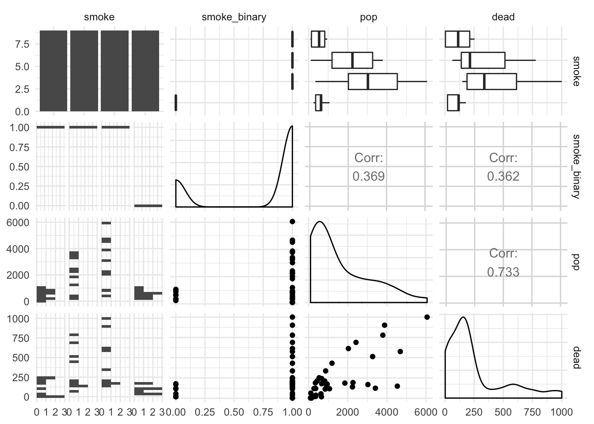
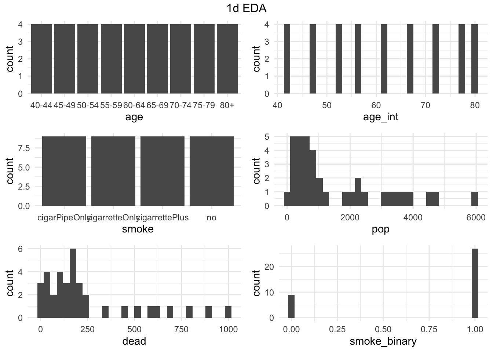
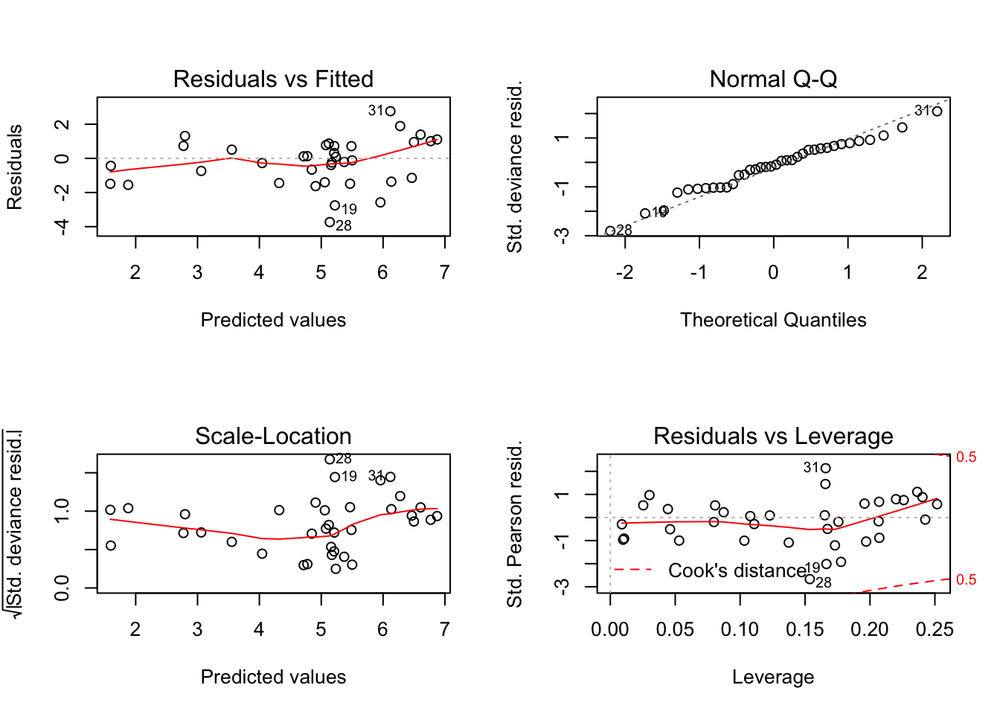
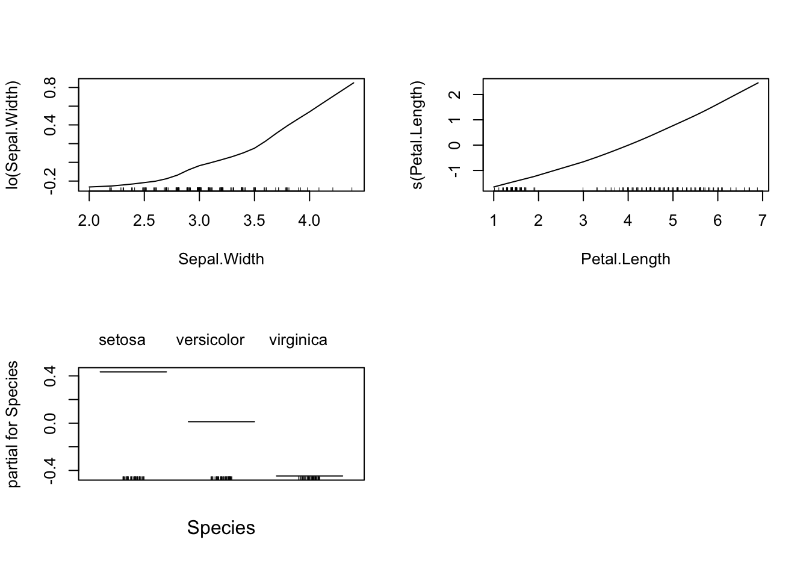
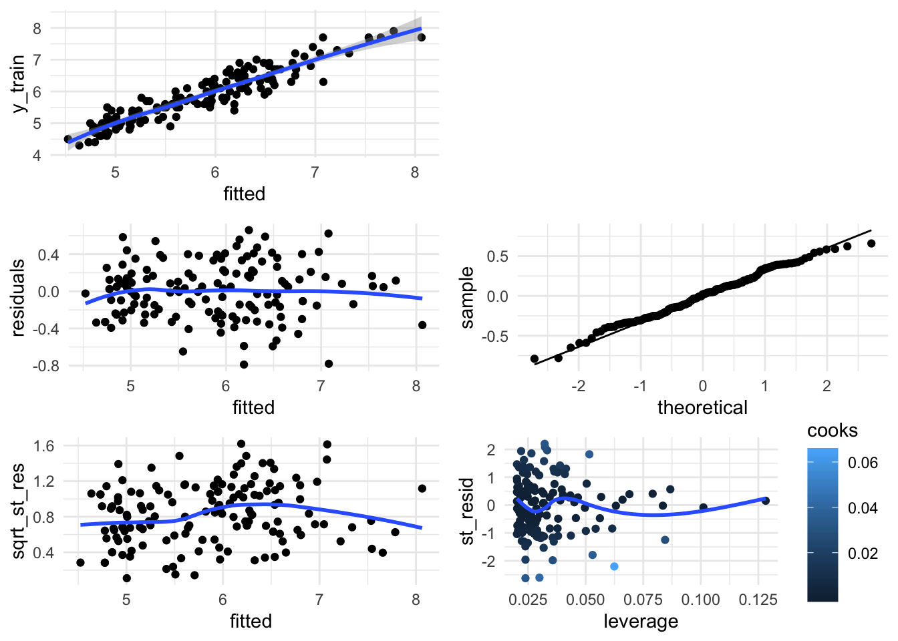

I decided to post this old lecture (with some clean up) online, as I think it really well captures a lot of things students might want to know about logistic regression while using R. Note: this document was written for summer students in CMU Statistics and Data Sciences’ SURE program, and was presented to them live.
Introduction
This lecture focuses on introducing a set of tools associated with poisson regression (and general additive models).
This data comes from Princeton’s Database, but is a very common dataset. They had an error and ugly data so I cleaned it up a bit.
library(tidyverse)
library(forcats)
theme_set(theme_minimal())
smoking <- read_csv(paste0("https://raw.githubusercontent.com/benjaminleroy/",
"stat315summer_data/master/",
"data_sure/smoking_data.csv")) %>%
mutate(smoke_binary = ifelse(smoke == "no", 0, 1),
age = factor(age)) %>%
select(-X1)
The data we will be using today (explorable below) contains information from a Canadian study that focusing the relationship between smoking and death (related to different age groups).
DT::datatable(smoking)Exploratory Data Analysis
Quick EDA before any regression:
library(GGally)
ggpairs(smoking, columns = c( "smoke", "smoke_binary", "pop", "dead"))
# Create grid of 1d visuals of variable distributions in data frame
# Args:
# data: data frame you'd like to explore
# ncol: number of columns for the visual output
#
# Returns:
# list of graphics
# and creates the correct visualization
gg1d <- function(data, ncol = 3){
require(gridExtra)
require(ggplot2)
columns <- names(data)
types <- sapply(data, class)
num_types <- c("numeric", "integer")
gglist <- list()
for (i in 1:length(columns)) {
if (types[i] %in% num_types) {
gglist[[i]] <- ggplot(data, aes_string(x = columns[i])) +
geom_histogram()
}else{
gglist[[i]] <- ggplot(data, aes_string(x = columns[i])) +
geom_bar()
}
}
grid.arrange(grobs = gglist, ncol = ncol, top = "1d EDA")
return(gglist)
}
. <- gg1d(smoking, ncol = 2)
Poisson Regression:
Poisson regression is useful when we are dealing with counts, for example the number of deaths of out of population of people (our example), terrorist attacks per year per region, etc.
Additionally, poisson regression is useful when events occur rarely (otherwise one might jump to linear regression first. e.g. population per country). Though for events that occur too rarely (lots of 0s say - you should try using a slight update - see Resources below).
What is the poisson distribution again?
\[ \mathbb{P}(X = x|\lambda) = \frac{\lambda^x e^{-\lambda}}{x!}, x \in \{0,1,2,...\} \quad \mathbb{E}(X) = \lambda, \quad \mathbb{V}(X) = \lambda \]
Motivation for the Link function
Given that we has small amounts of counts (which tend also to be though of as rates - generally less than 1, a log transform would make the values stretch to the full real values \(\mathbb{R}\).
Inference
Model
In our dataset we have the ability to explore the relationship between death and smoking. We should make sure to think about this problem in the poisson frame with respect to \(\lambda\) (a rate), specifically the rate of death per individual. Note that our data just gives counts of death per group population.
So we have 2 things:
- the counts of deaths per group
- and \(\lambda\) the rate of death per person
They obviously relate with a rate = count of deaths / total individuals.
If we are looking at the regression
\[\begin{align*} \log(\lambda | X) &= X\beta \\ \log(count/total |X) &= X\beta \\ \Leftrightarrow \log(count |X) &= X\beta + \log(total) \end{align*}\]In the final transformation we call \(log(total)\) the offset. There are cases when we don’t use offsets (e.g. number of papers a graduate student has published), but offsets can be like our example or more complicated, like area of region for growing mushrooms (vs number of mushrooms) etc. Also notice that the \(\log(total)\) does not have a \(\beta\) value associated with it.
Additionally, in the graduate student example (where the population is 1 individual), you can also think of the offset being \(\log(1) = 0\).
As such, in R we’d do the following:
poisson_glm <- glm(dead ~ age_int + smoke, offset = log(pop), family = poisson,
data = smoking)The summary looks decently similar to our other glms.
summary(poisson_glm)##
## Call:
## glm(formula = dead ~ age_int + smoke, family = poisson, data = smoking,
## offset = log(pop))
##
## Deviance Residuals:
## Min 1Q Median 3Q Max
## -3.7322 -1.3737 -0.1642 0.7407 2.7613
##
## Coefficients:
## Estimate Std. Error z value Pr(>|z|)
## (Intercept) -6.249136 0.088890 -70.302 < 2e-16 ***
## age_int 0.068141 0.001154 59.073 < 2e-16 ***
## smokecigarretteOnly 0.390484 0.037330 10.460 < 2e-16 ***
## smokecigarrettePlus 0.189927 0.035892 5.292 1.21e-07 ***
## smokeno -0.039428 0.046880 -0.841 0.4
## ---
## Signif. codes: 0 '***' 0.001 '**' 0.01 '*' 0.05 '.' 0.1 ' ' 1
##
## (Dispersion parameter for poisson family taken to be 1)
##
## Null deviance: 4055.984 on 35 degrees of freedom
## Residual deviance: 67.681 on 31 degrees of freedom
## AIC: 317.7
##
## Number of Fisher Scoring iterations: 4Hmmmmmm… if we look at those levels of smoking it isn’t really as we expected… we really want the first level to “no” so that all those \(\beta\) values compare against not smoking…
smoking <- smoking %>% mutate(smoke = fct_relevel(factor(smoke), "no"))
poisson_glm2 <- glm(dead ~ age_int + smoke, offset = log(pop), family = poisson,
data = smoking)
poisson_glm2 %>% summary##
## Call:
## glm(formula = dead ~ age_int + smoke, family = poisson, data = smoking,
## offset = log(pop))
##
## Deviance Residuals:
## Min 1Q Median 3Q Max
## -3.7322 -1.3737 -0.1642 0.7407 2.7613
##
## Coefficients:
## Estimate Std. Error z value Pr(>|z|)
## (Intercept) -6.288564 0.086484 -72.713 < 2e-16 ***
## age_int 0.068141 0.001154 59.073 < 2e-16 ***
## smokecigarPipeOnly 0.039428 0.046880 0.841 0.4
## smokecigarretteOnly 0.429912 0.039753 10.815 < 2e-16 ***
## smokecigarrettePlus 0.229356 0.038565 5.947 2.73e-09 ***
## ---
## Signif. codes: 0 '***' 0.001 '**' 0.01 '*' 0.05 '.' 0.1 ' ' 1
##
## (Dispersion parameter for poisson family taken to be 1)
##
## Null deviance: 4055.984 on 35 degrees of freedom
## Residual deviance: 67.681 on 31 degrees of freedom
## AIC: 317.7
##
## Number of Fisher Scoring iterations: 4Dispersion correction
Before we talk about inference of the \(\beta\) values and how to interpret them, let’s look at dispersion - which we talked about needing to do the get good confidence intervals.
Recall that since the variance and mean of the poisson are directly linked dispersion tells us if that “linking” is actually correct, we can caculate an estimate of \(\phi\) in the equation:
\[ Var(X) = \phi \lambda \]
when \(X\) is poisson.
We can test whether the dispersion is different than 1 with a \(\chi^2\) test:
dispersion <- poisson_glm$deviance/poisson_glm$df.residual
pchisq(poisson_glm$deviance,df = poisson_glm$df.residual,
lower.tail = FALSE)## [1] 0.0001527248Looks like \(\phi\) isn’t 1, that’s ok we can use a quasipoisson model.
qpoisson_glm <- glm(dead ~ age_int + smoke, offset = log(pop),
family = quasipoisson, data = smoking)
summary(qpoisson_glm)##
## Call:
## glm(formula = dead ~ age_int + smoke, family = quasipoisson,
## data = smoking, offset = log(pop))
##
## Deviance Residuals:
## Min 1Q Median 3Q Max
## -3.7322 -1.3737 -0.1642 0.7407 2.7613
##
## Coefficients:
## Estimate Std. Error t value Pr(>|t|)
## (Intercept) -6.288564 0.125073 -50.279 < 2e-16 ***
## age_int 0.068141 0.001668 40.847 < 2e-16 ***
## smokecigarPipeOnly 0.039428 0.067797 0.582 0.565063
## smokecigarretteOnly 0.429912 0.057490 7.478 2e-08 ***
## smokecigarrettePlus 0.229356 0.055772 4.112 0.000267 ***
## ---
## Signif. codes: 0 '***' 0.001 '**' 0.01 '*' 0.05 '.' 0.1 ' ' 1
##
## (Dispersion parameter for quasipoisson family taken to be 2.09146)
##
## Null deviance: 4055.984 on 35 degrees of freedom
## Residual deviance: 67.681 on 31 degrees of freedom
## AIC: NA
##
## Number of Fisher Scoring iterations: 4Question: How does the raw \(\beta\) estimates change between the Quasi-Poisson model (that estimates \(\phi\)) and the standard Poisson model?
Interpretation of \(\beta\)s.
Again, if we directly looked at \(\beta\) values we’d be looking at the linear change the in the \(X\) variable related to \(log(y)\). If we wanted to discuss it more like a change of rate we could look at
\[ e^{log(\lambda)} = e^{\beta_0 + \beta_1 * age\_int + ...} \]
Suppose we wanted to look at the likelihood/ rate of death between those that are 50 years old and a smoker vs a 55 year old and a non-smoker.
Question: What \(\beta\) values are we comparing?
We can’t really actually answer that question unless we assume that that all the types of smoke are the same, but let’s just assume that the first smoker only smoked cigarrettes, then we can examine
exp(sum(coef(qpoisson_glm)*c(0,5,-1,0,0))). So, comparing a 50 year-old-cigarrette smoker verse a 55-year-old non-smoker, the later is only 135% as likely to die compared to the former.
Intervals
To estimate confidence intervals we can still use confint, but we
confint(qpoisson_glm,parm = "age_int")## Waiting for profiling to be done...## 2.5 % 97.5 %
## 0.06487952 0.07141881Should probably get a better CI for this since the data is small (if you’re doing it - ask your TA).
Prediction
Unlike logistic regression we can start using the glm version of residuals (deviance) for logistic regression, and it makes more sense.
We can look at the standard diagonistics (this time with deviance residuals not residuals).
par(mfrow = c(2, 2))
plot(qpoisson_glm)
Predicting
Predicting new values (ok we’re just getting the fitted values in the code below, but same idea), is similar to Logistic regression, if you just leave type alone you’ll get the log value. Also note that the model we made also will take in the offset.
predict_log <- predict(object = qpoisson_glm, newdata = smoking)
predict <- predict(object = qpoisson_glm, newdata = smoking,
type = "response")
predict %>% head## 1 2 3 4 5 6
## 21.31690 16.40137 15.99375 57.07336 135.47095 160.11778GAM
Now, let’s look at some GAMs (general additive models). From lecture you learned about nonlinear regression and that we can change a glm to a gam like so:
\[\begin{align*} g(y) = \beta_0 + \beta_1 X_1 + \beta_2 X_2... \\ g(y) = \beta_0 + f(X_1) + g(X_2) + ... \end{align*}\]Specifically, we generally have \(f,g\) be loess (local polynomial regression) or smoothing splines. Using the library(gam), we can use gam very similarly to what we do with glm, the only difference is we use lo(X1) or s(X1) to create a 1d Loess or Smoothing spline with that variable. After this lecture I learned that library(mgcv) provides better toos for GAM - specifically, it allows the user to have interaction terms between features.
library(gam)
data(iris)
lm_gam <- gam(Sepal.Length ~ lo(Sepal.Width) + s(Petal.Length) + Species,data = iris, family = gaussian)
summary(lm_gam)##
## Call: gam(formula = Sepal.Length ~ lo(Sepal.Width) + s(Petal.Length) +
## Species, family = gaussian, data = iris)
## Deviance Residuals:
## Min 1Q Median 3Q Max
## -0.78898 -0.22747 0.02056 0.19209 0.65905
##
## (Dispersion Parameter for gaussian family taken to be 0.0927)
##
## Null Deviance: 102.1683 on 149 degrees of freedom
## Residual Deviance: 12.9049 on 139.1878 degrees of freedom
## AIC: 81.3515
##
## Number of Local Scoring Iterations: 5
##
## Anova for Parametric Effects
## Df Sum Sq Mean Sq F value Pr(>F)
## lo(Sepal.Width) 1.00 3.433 3.433 37.028 1.066e-08 ***
## s(Petal.Length) 1.00 80.383 80.383 866.985 < 2.2e-16 ***
## Species 2.00 2.120 1.060 11.433 2.528e-05 ***
## Residuals 139.19 12.905 0.093
## ---
## Signif. codes: 0 '***' 0.001 '**' 0.01 '*' 0.05 '.' 0.1 ' ' 1
##
## Anova for Nonparametric Effects
## Npar Df Npar F Pr(F)
## (Intercept)
## lo(Sepal.Width) 2.8 1.8159 0.1507
## s(Petal.Length) 3.0 1.7429 0.1610
## SpeciesNote that the statistics have been changed to \(F\) statistics. For the nonparametric effects, it’s really wise to look at the ANOVA \(F\)-statistics, and we could run following to see if the additional of a smoothing spline with lo(Petal.Length) is useful.
anova(lm_gam,
gam(Sepal.Length ~ s(Petal.Length) + Species,data = iris, family = gaussian))## Warning in model.matrix.default(mt, mf, contrasts): non-list contrasts argument
## ignored## Analysis of Deviance Table
##
## Model 1: Sepal.Length ~ lo(Sepal.Width) + s(Petal.Length) + Species
## Model 2: Sepal.Length ~ s(Petal.Length) + Species
## Resid. Df Resid. Dev Df Deviance Pr(>Chi)
## 1 139.19 12.905
## 2 143.00 16.314 -3.8121 -3.4093 1.576e-07 ***
## ---
## Signif. codes: 0 '***' 0.001 '**' 0.01 '*' 0.05 '.' 0.1 ' ' 1Partial Dependence Plots
To examine the relationship between the response and a single variable (even in logistic regression), we can do the following (using the built-in plot function). This creates a Partial Dependence Plot, basically think of them as averages of the estimated value of mean of \(Y\) holding the variable of interest fixed.
par(mfrow = c(2,2))
plot(lm_gam)
Additionally, you can still can use the basic plots from whatever glm function you’re using (in lm we would do the following graphics) - this time in ggplot):
diag_data <- data.frame(y_train = lm_gam$y,
fitted = lm_gam$fitted.values,
residuals = lm_gam$residuals,
st_resid = rstandard(lm_gam),
leverage = hatvalues(lm_gam),
cooks = cooks.distance(lm_gam)) %>%
mutate(sqrt_st_res = sqrt(abs(st_resid)))
fit_vs_y <- ggplot(diag_data, aes(x = fitted, y = y_train)) + geom_point() +
geom_smooth()
res_vs_fit <- ggplot(diag_data, aes(x = fitted, y = residuals)) + geom_point() +
geom_smooth(se = F)
qq_norm <- ggplot(diag_data, aes(sample = residuals)) +
geom_qq(distribution = stats::qnorm) +
geom_qq_line()
sqrt_st_res_vs_fit <- ggplot(diag_data, aes(x = fitted, y = sqrt_st_res)) +
geom_point() + geom_smooth(se = F)
st_resid_vs_leverage <- ggplot(diag_data, aes(x = leverage, y = st_resid,
color = cooks)) +
geom_point() +
geom_smooth(se = F)
grid.arrange(fit_vs_y, ggplot(),
res_vs_fit, qq_norm,
sqrt_st_res_vs_fit, st_resid_vs_leverage, nrow = 3)
Additional Resources
Some more examples of GLMs and GAMs: Cosma’s Textbook, Chapter 13
R approaches for Poisson Regression Cran Package vignette: Deals with dispersion, zero-inflation (lots of 0 values as counts), other link functions, etc.